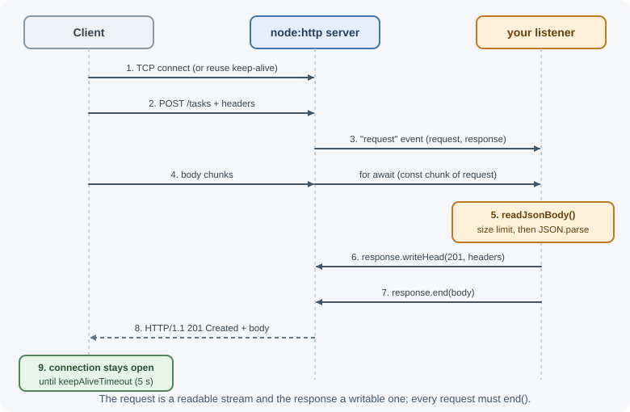
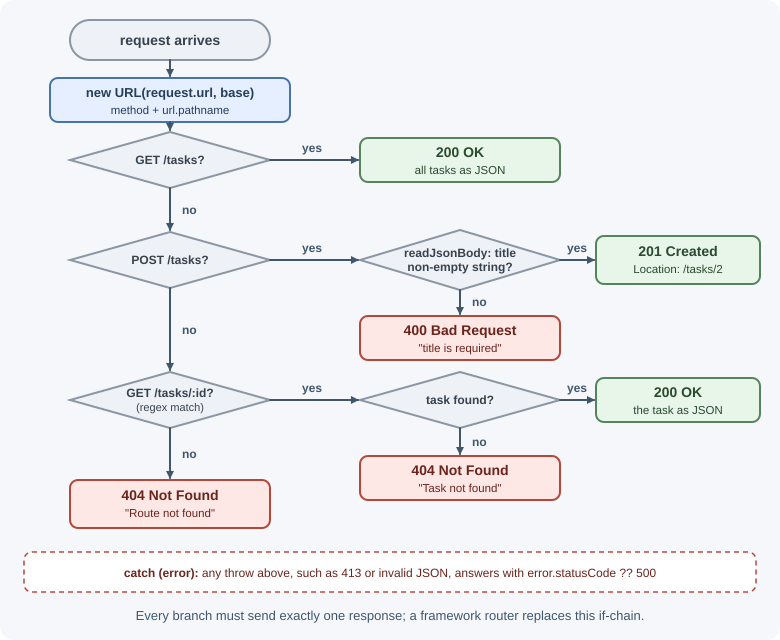

Building HTTP Servers with the http Module¶
Node.js can serve HTTP with no framework at all. The built-in node:http
module creates a server, hands you each request and a response object, and
leaves routing, body parsing, and error handling to you. Frameworks such as
Express are built on top of this module.
Why it matters¶
Writing a server with node:http once shows exactly what a framework does
for you: parsing URLs, collecting request bodies, setting headers and status
codes, and handling errors. That knowledge makes framework behavior less
magical and helps you debug problems—timeouts, half-sent responses,
connection handling—that sit below any framework. For the protocol itself,
see HTTP and HTTPS.
Real-world usage¶
- Next.js documents a custom server that is a plain
createServer((req, res) => handle(req, res))from Node.js'shttpmodule, wrapping Next.js's request handler. Teams use it when they need routing or hooks that the framework's built-in server does not offer (Next.js docs: Custom server). - AWS Application Load Balancers close idle connections after 60
seconds by default. AWS recommends that the application's idle timeout be
larger than the load balancer's. Otherwise the app may close a
connection just as the balancer sends a request on it, and the client
gets
502 Bad Gateway. Node.js's defaultkeepAliveTimeoutis only 5 seconds, so this is a classic Node.js-behind-ALB bug (AWS docs: Application Load Balancer attributes).
Popular tools and providers: frameworks built on node:http such as Express,
Fastify, Koa, and NestJS; Undici (behind fetch) and Axios for outbound
calls; Nginx and cloud load balancers in front of Node.js.
How it works¶
Creating a server¶
import { createServer } from "node:http";
const server = createServer((request, response) => {
response.statusCode = 200;
response.setHeader("Content-Type", "text/plain; charset=utf-8");
response.end("Hello from Node.js\n");
});
server.listen(3000, () => {
console.log("Listening on http://localhost:3000");
});
createServer registers your function as the listener for the server's
request event. It runs once per HTTP request. listen(port) binds the
server to a TCP port.

The request: http.IncomingMessage¶
The request object is a readable stream plus metadata:
| Property | Example | Notes |
|---|---|---|
request.method |
"POST" |
Uppercase HTTP method. |
request.url |
"/orders/42?expand=items" |
Path and query string, not a full URL. |
request.headers |
{ "content-type": "application/json" } |
Header names are lowercased. |
request.httpVersion |
"1.1" |
|
request.socket.remoteAddress |
"203.0.113.9" |
Client IP (or the proxy's IP behind a proxy). |
The body is not available as a property. You must read it from the stream.
The response: http.ServerResponse¶
The response object is a writable stream with helpers:
| Method / property | Purpose |
|---|---|
response.statusCode = 201 |
Sets the status code (default 200). |
response.setHeader(name, value) |
Sets a header before sending. |
response.writeHead(status, headers) |
Sets status and headers at once and sends them. |
response.write(chunk) |
Sends part of the body (headers are sent first if not already). |
response.end([chunk]) |
Finishes the response. Every request must end. |
response.headersSent |
true once headers have gone out; you can no longer change status or headers. |
If you never call end(), the client waits until it times out.
Parsing the URL¶
request.url is a relative path. Combine it with a base to use the URL
class:
const url = new URL(request.url, `http://${request.headers.host}`);
url.pathname; // "/orders/42"
url.searchParams.get("expand"); // "items"
Reading the request body¶
Body data arrives as chunks. Collect them, enforce a size limit, then decode:
const MAX_BODY_BYTES = 1_000_000; // 1 MB
async function readJsonBody(request) {
const chunks = [];
let size = 0;
for await (const chunk of request) {
size += chunk.length;
if (size > MAX_BODY_BYTES) {
const error = new Error("Payload too large");
error.statusCode = 413;
throw error;
}
chunks.push(chunk);
}
const text = Buffer.concat(chunks).toString("utf8");
try {
return text ? JSON.parse(text) : {};
} catch {
const error = new Error("Invalid JSON");
error.statusCode = 400;
throw error;
}
}
Without a limit, a client can send gigabytes and exhaust memory.
Status codes and headers¶
Choose the status code that describes the result—200 OK, 201 Created,
204 No Content, 400 Bad Request, 404 Not Found, 500 Internal Server
Error, and so on. See HTTP status codes
and HTTP headers for the full
reference.
Keep-alive and timeouts¶
HTTP/1.1 connections are persistent by default: after one response, the same TCP connection can carry the next request. This avoids repeating the TCP (and TLS) handshake. The server closes idle connections after a timeout.
| Setting | Default | Meaning |
|---|---|---|
server.keepAliveTimeout |
5 s | How long an idle keep-alive connection stays open. |
server.headersTimeout |
The smaller of 60 s and requestTimeout |
Maximum time to receive the complete request headers. |
server.requestTimeout |
300 s | Maximum time to receive the entire request; the server then answers 408. |
server.keepAliveTimeout = 65_000;
server.headersTimeout = 66_000;
Behind a load balancer
If a load balancer keeps idle connections open longer than your server
does, the server may close a connection just as the load balancer sends a
new request on it, producing intermittent 502 errors. Set
keepAliveTimeout slightly longer than the load balancer's idle
timeout (60 seconds by default on an AWS Application Load Balancer), and
headersTimeout a little longer still, as in the example above.
HTTPS¶
node:https works like node:http but needs a TLS certificate and key:
import { createServer } from "node:https";
import { readFileSync } from "node:fs";
createServer(
{ key: readFileSync("key.pem"), cert: readFileSync("cert.pem") },
(request, response) => response.end("secure\n"),
).listen(443);
In production, TLS is usually terminated at a reverse proxy or load balancer (Nginx, a cloud load balancer), which forwards plain HTTP to Node.js on a private network. See reverse proxy and TLS and SSL.
Making HTTP requests from Node.js¶
Backends often call other services. Node.js includes a global fetch
(implemented by the Undici library), the same API as in browsers:
const response = await fetch("https://api.example.com/users/1", {
headers: { Accept: "application/json" },
signal: AbortSignal.timeout(5000), // always set a timeout
});
if (!response.ok) {
throw new Error(`Upstream responded ${response.status}`);
}
const user = await response.json();
fetch only rejects on network failures or aborts; a 404 or 500 is a
fulfilled response, so check response.ok or response.status.
The lower-level http.request() gives full control over sockets and agents
and is used by older libraries:
import { request } from "node:https";
const req = request("https://example.com", (res) => {
console.log(res.statusCode);
res.resume(); // consume the body so the socket can be reused
});
req.on("error", (error) => console.error(error));
req.end();
Graceful shutdown¶
server.close() stops accepting new connections and calls its callback
when existing ones have finished. Since Node.js 19 it also closes idle
keep-alive connections right away; connections that are still serving a
request stay open until their response ends. On older versions, call
server.closeIdleConnections() yourself:
process.on("SIGTERM", () => {
server.close(() => process.exit(0)); // finish in-flight requests first
server.closeIdleConnections(); // needed only before Node.js 19
setTimeout(() => process.exit(1), 10_000).unref(); // force exit if stuck
});
See process, environment variables, and configuration for a complete shutdown sequence.
When to use and when not to use¶
- Use
node:httpdirectly to learn how HTTP works in Node.js, for tiny internal services (a health check, a metrics endpoint), and when you need full control over sockets and streaming. - Use a framework (Express, Fastify, Koa) for anything with more than a handful of routes, request validation, or middleware. You would otherwise rewrite routing, body parsing, and error handling yourself.
- Use
fetchfor outbound calls in new code; drop down tohttp.request()or an UndiciAgentonly for low-level control such as custom connection pooling. - Do not terminate TLS in Node.js in a typical cloud deployment; let the load balancer or Nginx do it.
| Need | Choose | Why |
|---|---|---|
| A REST API with many routes | Express or Fastify | Routing, middleware, error handling built in |
| One health or metrics endpoint | node:http |
No dependency needed |
| Outbound JSON calls | fetch + AbortSignal.timeout |
Built in; same API as browsers |
| Streaming proxy with tight control | node:http / Undici |
Direct access to streams and sockets |
Practical examples¶
A small JSON API without a framework¶
import { createServer } from "node:http";
const tasks = [{ id: 1, title: "Learn the http module", done: false }];
function sendJson(response, status, data) {
const body = JSON.stringify(data);
response.writeHead(status, {
"Content-Type": "application/json; charset=utf-8",
"Content-Length": Buffer.byteLength(body),
});
response.end(body);
}
const server = createServer(async (request, response) => {
const url = new URL(request.url, `http://${request.headers.host}`);
const match = url.pathname.match(/^\/tasks\/(\d+)$/);
try {
if (request.method === "GET" && url.pathname === "/tasks") {
return sendJson(response, 200, tasks);
}
if (request.method === "POST" && url.pathname === "/tasks") {
const body = await readJsonBody(request); // from the section above
if (typeof body.title !== "string" || body.title.trim() === "") {
return sendJson(response, 400, { error: "title is required" });
}
const task = { id: tasks.length + 1, title: body.title, done: false };
tasks.push(task);
response.setHeader("Location", `/tasks/${task.id}`);
return sendJson(response, 201, task);
}
if (request.method === "GET" && match) {
const task = tasks.find((t) => t.id === Number(match[1]));
return task
? sendJson(response, 200, task)
: sendJson(response, 404, { error: "Task not found" });
}
sendJson(response, 404, { error: "Route not found" });
} catch (error) {
sendJson(response, error.statusCode ?? 500, {
error: error.statusCode ? error.message : "Internal server error",
});
}
});
server.listen(3000);
Try it:
curl -i localhost:3000/tasks
curl -i -X POST localhost:3000/tasks \
-H "Content-Type: application/json" -d '{"title":"Ship it"}'
curl -i localhost:3000/tasks/99
Save it together with readJsonBody from the section above. Tested on
Node.js 22, the requests return 200; 201 Created with
Location: /tasks/2; and 404 with {"error":"Task not found"}. A missing
title or broken JSON gives 400, and a body over 1 MB gives 413.

What a framework adds¶
Compare the code above with what Express gives you:
| Concern | Plain node:http |
Express |
|---|---|---|
| Routing | Manual if checks and regexes |
app.get("/tasks/:id", ...) with parameters |
| Body parsing | Collect chunks, limit, parse | express.json({ limit: "1mb" }) |
| Sending JSON | Set headers, stringify, end | res.status(201).json(task) |
| Shared logic | Wrap handlers by hand | Middleware chain |
| Errors | try/catch in every handler |
Central error-handling middleware |
| Query strings | URL and searchParams |
req.query |
Frameworks exist to remove this repetitive code, not to replace the HTTP model. See getting started with Express.
Best practices¶
- End every response exactly once, including on errors.
- Limit request body size and reject oversize bodies with
413. - Set
Content-Type(withcharsetfor text) andContent-Lengthwhen known. - Always set timeouts on outgoing requests (
AbortSignal.timeout). - Check
response.okafterfetch; non-2xx responses do not reject. - Tune
keepAliveTimeoutto be longer than your load balancer's idle timeout. - Terminate TLS at a proxy or load balancer unless you have a reason not to.
- Implement graceful shutdown so deploys do not cut off in-flight requests.
In production¶
- Intermittent
502 Bad Gatewaybehind a load balancer. - Symptom: a small fraction of requests fail with
502at random, more often after quiet periods; your app logs show no error for them. - Detect: the load balancer's 502 metric rises while the app's own error rate stays flat.
- Cause: Node.js closed an idle keep-alive connection (5 s by default) that the balancer still considered open (60 s by default on AWS ALB).
- Fix: set
server.keepAliveTimeoutabove the balancer's idle timeout (for example 65 s) andheadersTimeoutslightly above that. - Requests that hang until the client gives up.
- Symptom: some requests never get a response; clients see timeouts.
- Detect: access logs show requests with no matching response line, and
the server answers
408afterrequestTimeoutfor slow uploads. - Cause: a code path that never calls
response.end(), often an earlyreturnor an unhandled error inside anasynchandler. - Fix: end the response on every branch, and wrap the handler in one
try/catchthat always sends an error response. - Memory exhaustion from request bodies.
- Symptom: memory spikes and the process is killed during large or malicious uploads.
- Detect: memory graphs jump with request size, not request count.
- Cause: reading the whole body without a size limit.
- Fix: enforce a limit while reading and answer
413, asreadJsonBodydoes; set the same limit at the proxy. - Deploys drop in-flight requests.
- Symptom: every deploy causes a burst of
ECONNRESETor502errors for clients. - Detect: error spikes line up exactly with deploy times.
- Cause: the process exits on
SIGTERMwithout letting current requests finish. - Fix: handle
SIGTERMwithserver.close()and a forced-exit timer, and keep the orchestrator's grace period longer than that timer.
Important terminology¶
IncomingMessage: The request object; a readable stream with method, URL, and headers.ServerResponse: The response object; a writable stream with status and header helpers.- Keep-alive (persistent connection): Reusing one TCP connection for multiple HTTP requests.
- TLS termination: Decrypting HTTPS at a proxy before traffic reaches the application.
- Undici: The HTTP client library that powers Node.js's built-in
fetch. - Graceful shutdown: Stopping new work and finishing current work before exiting.
- Headers sent: The point after which status and headers can no longer change.
Common mistakes and misconceptions¶
- Forgetting
response.end(), leaving clients hanging. - Setting headers after the body started, causing
ERR_HTTP_HEADERS_SENT. - Reading bodies without a size limit.
- Treating
request.urlas a full URL. It is only the path and query. - Assuming
fetchthrows on HTTP errors. - "Node.js needs Express to serve HTTP." Express is a convenience layer
over
node:http. - Ignoring idle keep-alive connections during shutdown on Node.js
versions before 19, so
server.close()never finishes.
Revision questions¶
- What do
IncomingMessageandServerResponserepresent, and which kind of stream is each? - How do you read and limit a JSON request body with
node:http? - Why can a mismatch between
keepAliveTimeoutand a load balancer's idle timeout cause 502 errors? - Why does
fetchresolve for a 500 response, and how do you detect it? - What does
server.close()do and not do? - List four things Express does that you must write yourself with
node:http.